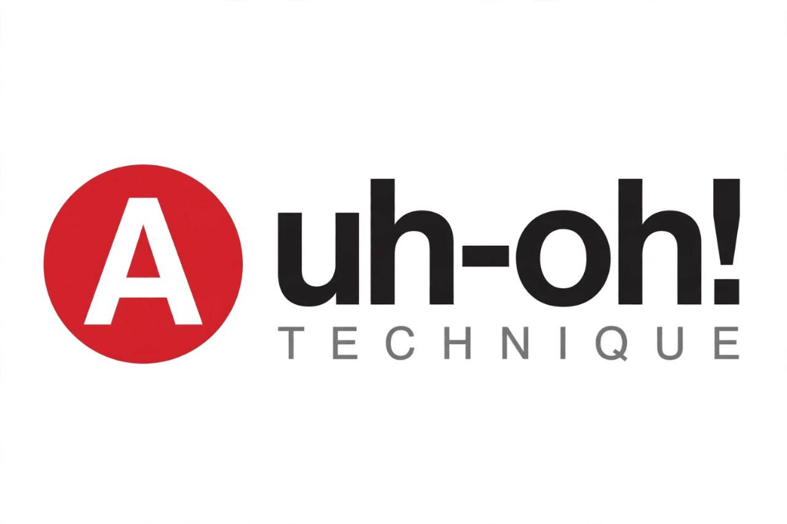

We build plain-English, browser-verifiable statistical tools so teams, shops, and researchers can audit AI claims, check empirical studies, and keep tamper-proof books—without trusting a black box. Every tool below runs locally in your browser with open data and SHA-256 receipts.
Interactive statistics tools that translate AI interpretability and replication debates into clear, testable math.
Practical operations tools for independent businesses, community kitchens, and teams that need honest records.
Benchmarks, PDFs, and zero-dependency verification scripts for engineers, reviewers, and collaborators.
Every dossier ships with primary-source CSVs, <1s Python verifiers, and SHA-256 manifests—zero invented numbers.
Built by Christopher Vivian Duguay (Ph.D. Candidate in Quantitative Psychology, University of Manitoba) & the Sweetbrier Circus.